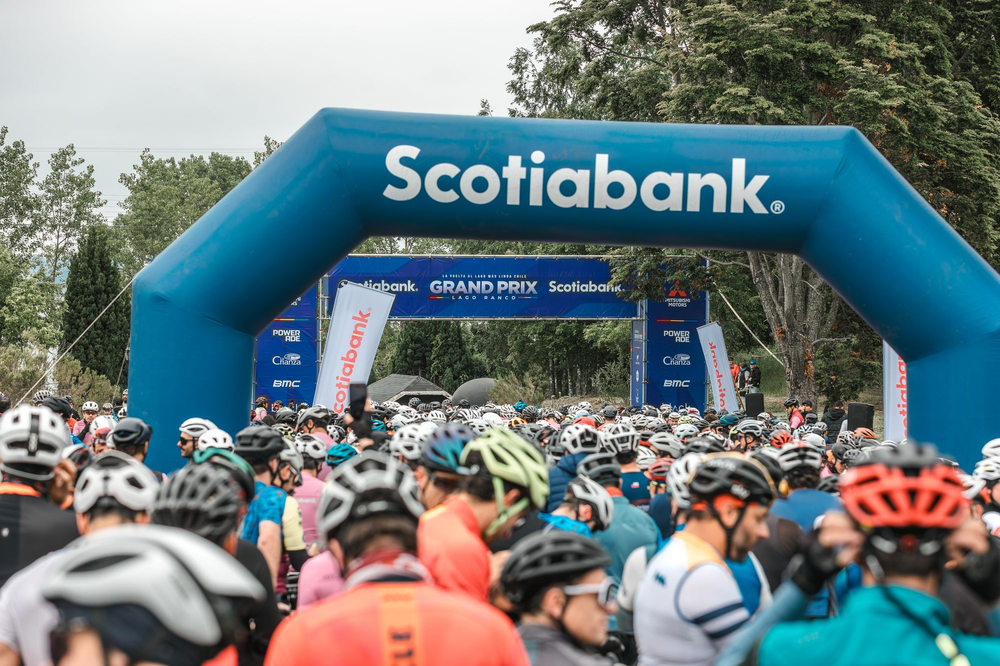
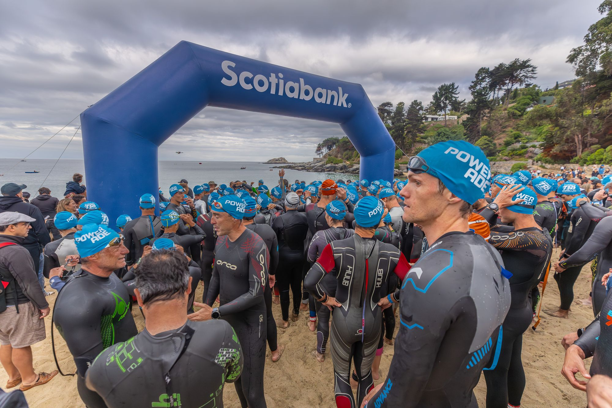
Scotiabank×Andeschimp
Scotiabank Grand Prix Lago Ranco · Scotiabank Triatlón de Zapallar
Una alianza que crece junto al deporte
Desde 2024, Scotiabank ha acompañado como Main Sponsor el crecimiento del Grand Prix Lago Ranco y del Triatlón de Zapallar. En estos tres años desarrollamos juntos experiencias deportivas de alta calidad y oportunidades de posicionamiento para la marca.
Scotiabank inicia como Main Sponsor de ambos eventos.
Tercer año de alianza, con crecimiento sostenido de los dos eventos.
Propuesta de continuidad y nuevas oportunidades.
Crecimiento sostenido de nuestras comunidades
Grand Prix Lago Ranco
Triatlón de Zapallar
Misma escala en ambos gráficos (0 a 1.400). 2023 en gris rayado: referencia previa a la alianza. 2026 corresponde a inscritos. Total conjunto: 1.442 (2023), 1.512 (2024), 1.866 (2025), 2.120 (2026), +40,2% durante la alianza.
Un evento que continúa creciendo
| Indicador | Resultado |
|---|---|
| Participantes 2024 | 1.000 |
| Participantes 2025 | 1.205 |
| Inscritos 2026 | 1.320 |
| Crecimiento 2024–2026 | +32% |
Más de 100 mil visualizaciones durante el período del evento. Séptima edición 2025 con récord de inscritos, según CNN Chile, La Tercera y Emol.
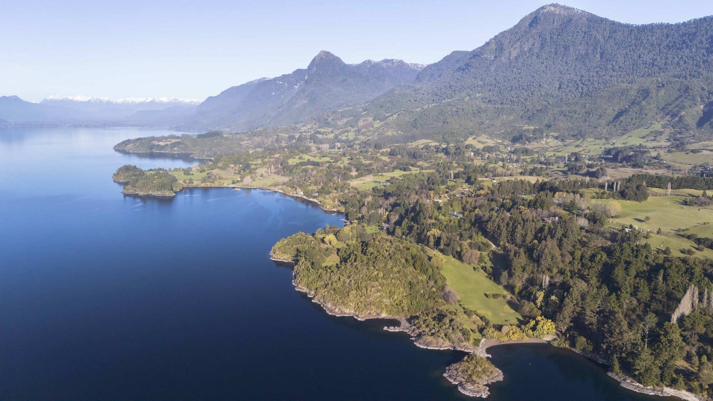
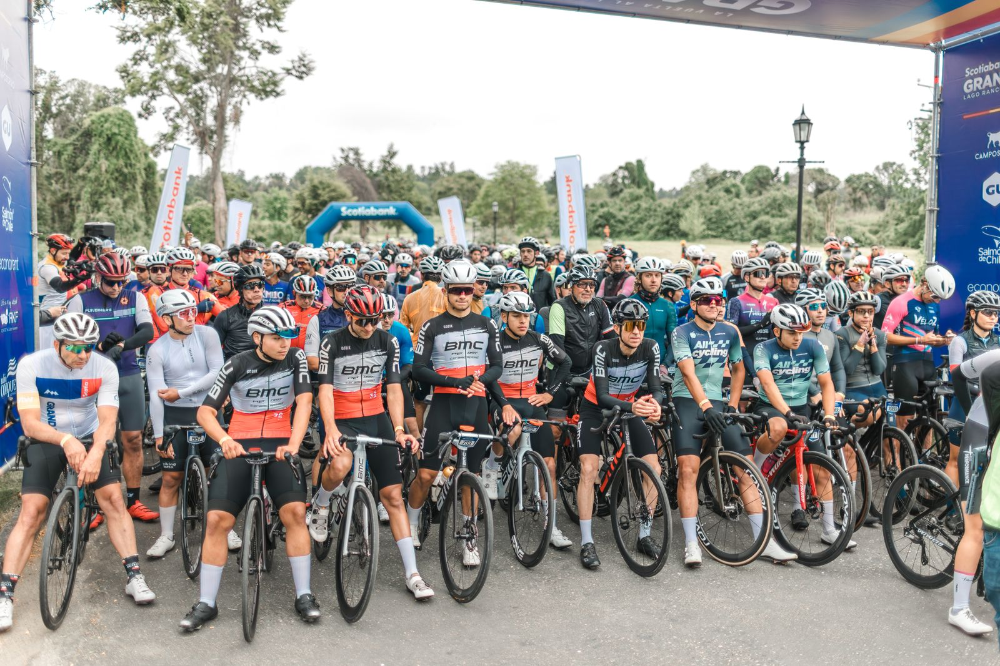
Un evento de alta demanda y convocatoria
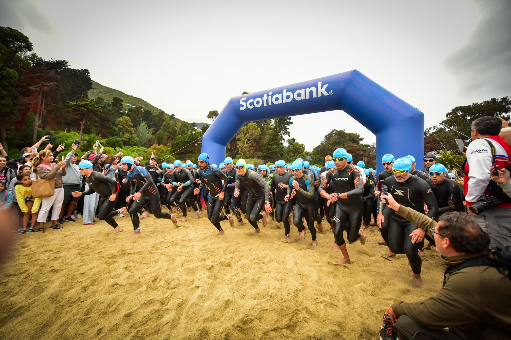
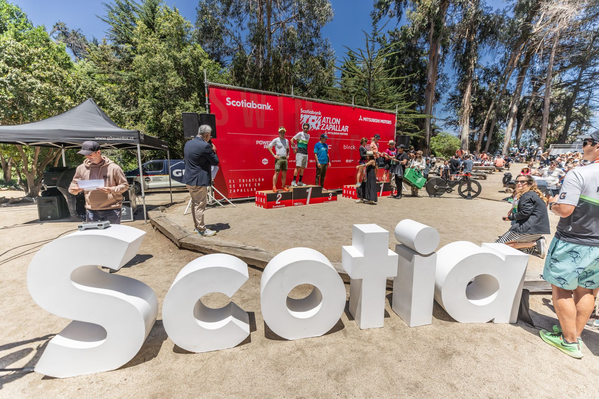
| Indicador | Resultado |
|---|---|
| Participantes 2024 | 512 |
| Participantes 2025 | 661 |
| Inscritos 2026 | 800 |
| Crecimiento 2024–2026 | +56,3% |
| Vistas en Instagram, ene 2025 a oct 2026 | 1,11 M |
Recuperación después de 2024 y crecimiento en 2025 y 2026, en un calendario con más oferta de eventos.
Un motor de desarrollo para las comunidades
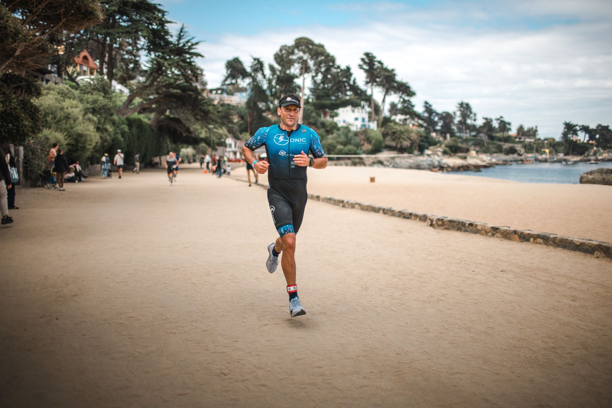
Cerca de $4.000 millones en actividad económica asociada a ambos eventos. Estimación preliminar, detalle en el Anexo 3. Sectores: hotelería, gastronomía, transporte y combustible, comercio local, turismo, trabajadores y proveedores locales.
Una comunidad digital que amplifica la alianza
| Indicador | Grand Prix | Triatlón | Total |
|---|---|---|---|
| Seguidores (oct 2026) | 5.153 | 3.753 | 8.906 |
| Vistas (orgánicas + pagadas) | 1.448.083 | 1.107.614 | 2.555.697 |
| Interacciones | 33.643 | 22.065 | 55.708 |
| Visitas al perfil | 31.283 | 21.820 | 53.103 |
| Publicaciones feed / reels | 142 / 40 | 99 / 20 | 241 / 60 |
| Seguidores 2024 y Facebook | Pendiente | ||
Contenidos destacados con Scotiabank
| Publicación | Vistas | Alcance |
|---|---|---|
| GP Postales de la 7ª edición con @scotiabankchile | 35.574 | 10.641 |
| TRI Un kit. Muchas historias | 26.753 | 9.754 |
| TRI Medalla Finisher 2026 | 25.340 | 12.418 |
| GP Save the Date 2026 (reel) | 25.766 | 12.504 |
Fuente: Reportei. Las vistas incluyen pauta pagada. El alcance se informa por publicación y no se suma entre cuentas para no contar dos veces a la misma persona. Presencia de marca en cada contenido por confirmar.
Visibilidad en medios de comunicación
| Medio | 2024 | 2025 | 2026 |
|---|---|---|---|
| Portales digitales | Pend. | 39 | Pend. |
| Radio | Pend. | 2 | Pend. |
| Televisión | Pend. | 2 | Pend. |
| Triatlón de Zapallar | Pendiente | ||
Medios nacionales: CNN Chile, La Tercera, Emol, BioBioChile, Cooperativa, ADN, Agricultura, AS Chile. Más la red de diarios regionales de Los Ríos. Fuente: reporte de gestión de prensa Grand Prix 2025.
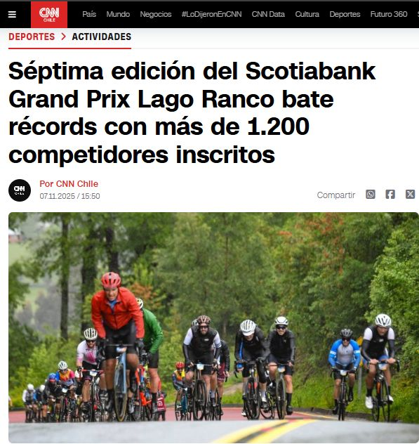
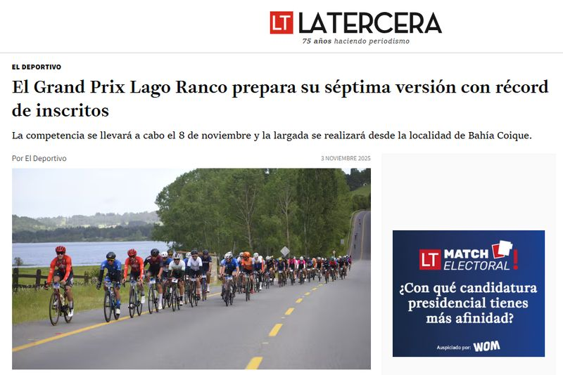
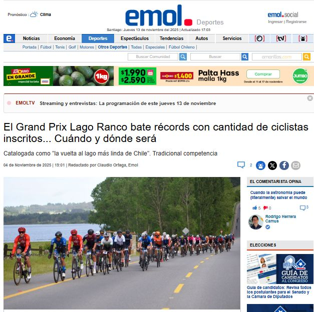
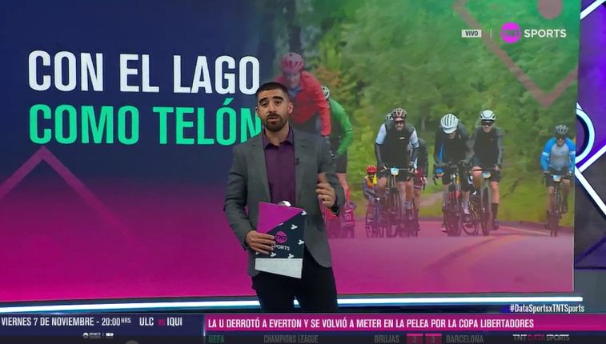
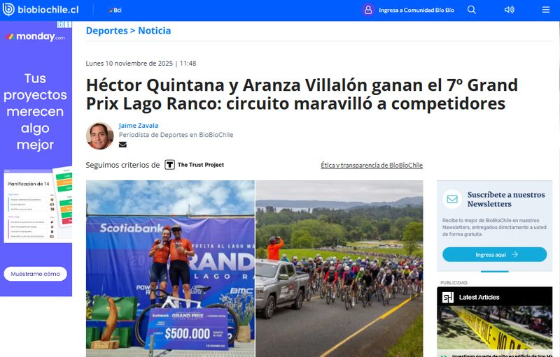
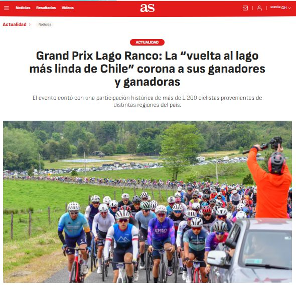
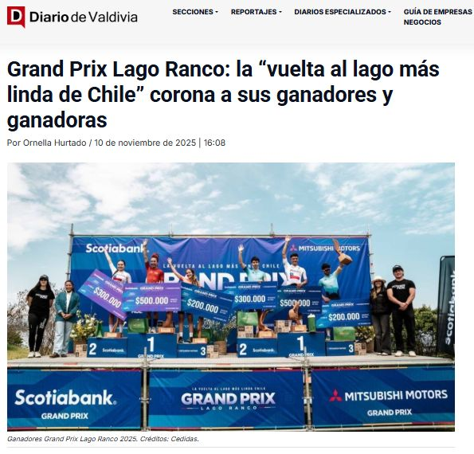
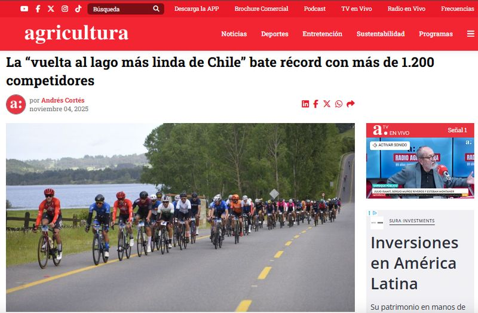
¿Qué recibió Scotiabank en estos tres años?
Retorno de marca
Exposición y presencia comunicacional asociada a dos eventos deportivos consolidados.
Retorno comercial
Beneficios exclusivos e inscripciones con descuento para clientes del banco.
Scotiabank presente en cada deportista
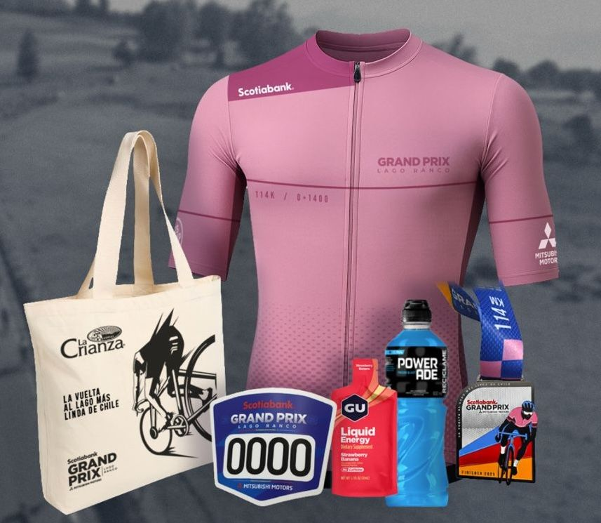
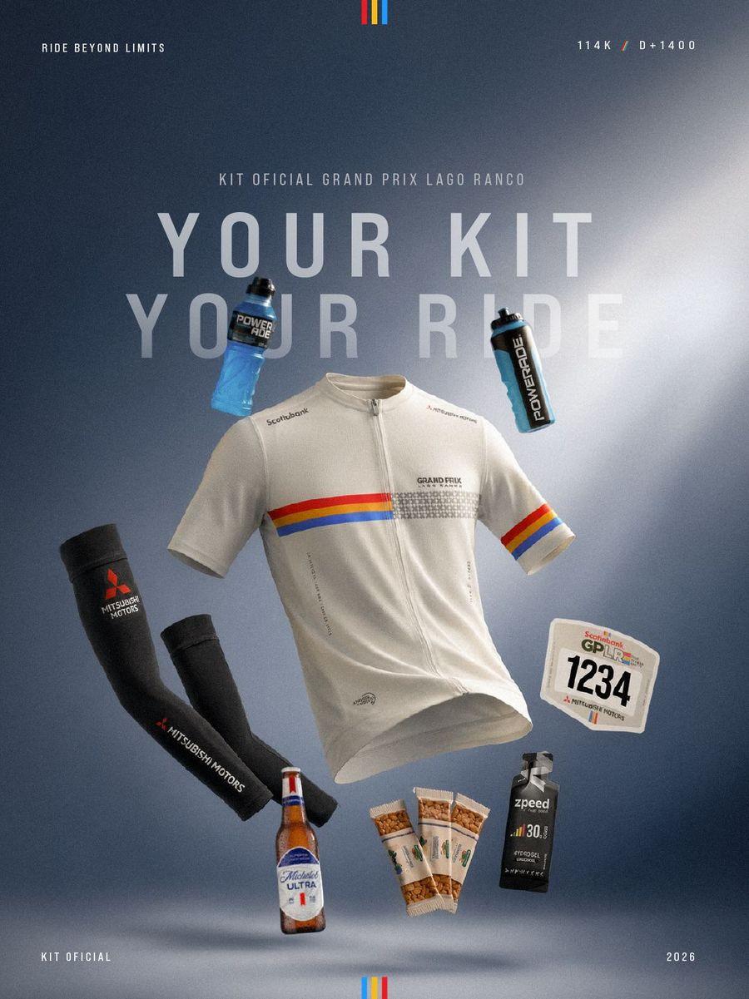
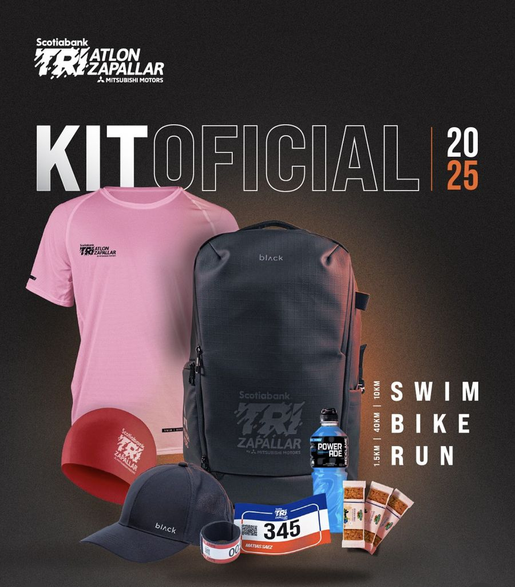
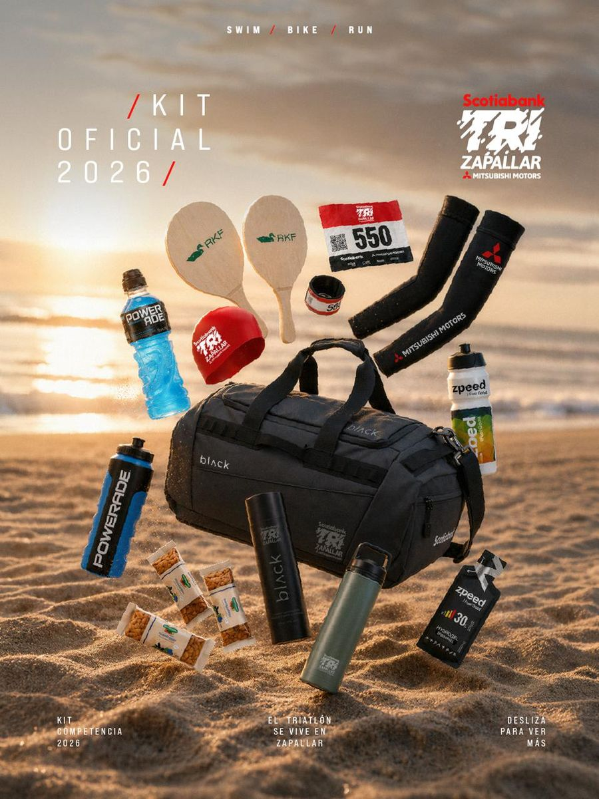
Tricotas, gorros de natación, bolsos, botellas y números de competencia con la marca. Son productos que los deportistas siguen usando después de la carrera. Kits 2024 por incorporar.
Una marca protagonista en cada experiencia
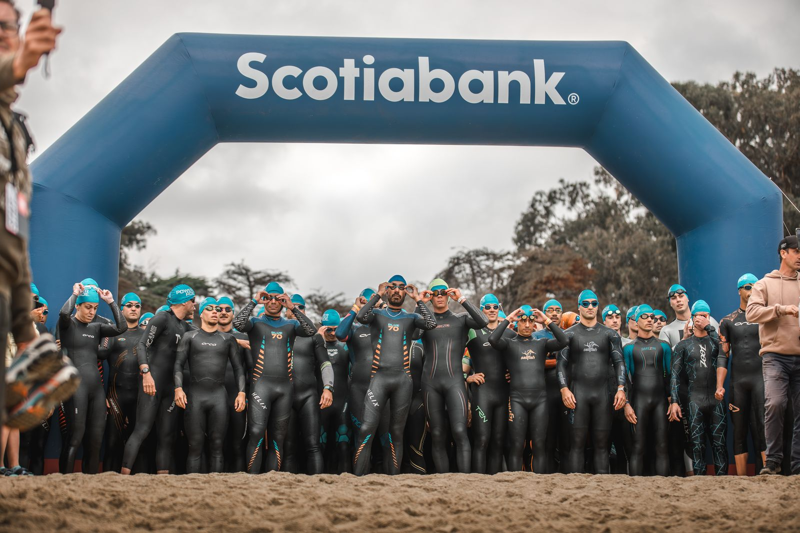
Scotiabank forma parte de la experiencia que viven los deportistas en cada evento: arcos, partidas, premiaciones y vestuario oficial.
Beneficios que generan valor
Hoy los clientes Scotiabank tienen 50% de descuento en la inscripción de ambos eventos. Es un beneficio atractivo y también un esfuerzo económico relevante para la organización.
| Inscripciones con descuento | Grand Prix | Triatlón |
|---|---|---|
| 2024 | 100 | 100 |
| 2025 | 100 | 100 |
| 2026 | 100 | 100 |
| Total beneficiadas | 300 | 300 |
| % de participantes 2024–2026 | 8,5% | 15,2% |
| Monto acumulado descontado | Pend. | Pend. |
Propuesta 2027–2029
Descuento financiado por Andeschimp.
Cofinanciado: Scotiabank 20% y Andeschimp 30%.
- Preventa exclusiva para clientes, clave en el Triatlón, que agotó cupos tres meses antes.
- Cupos preferentes de inscripción.
- Experiencias y beneficios especiales durante los eventos.
Eventos más grandes, mayores responsabilidades
El crecimiento de ambos eventos implicó asumir más costos de producción, manteniendo la seguridad, la experiencia de los participantes y la calidad de las competencias.
Evolución de costos de producción 2024–2026 por incorporar (Anexo 7).
Kits de competencia
Más vestuario, accesorios y productos oficiales.
Infraestructura
Más equipamiento, estructuras y servicios.
Seguridad
Mayor coordinación y despliegue operativo.
Servicios médicos
Más capacidad de respuesta y prevención.
Logística
Transporte, abastecimiento y coordinación más complejos.
Producción y comunicaciones
Más personal, fotografía, video y contenido.
Tres nuevos años para seguir creciendo juntos
| Duración | 3 años, 2027–2029 |
|---|---|
| Eventos | Grand Prix Lago Ranco y Triatlón de Zapallar |
| Categoría | Main Sponsor / Naming Sponsor |
| Exclusividad | Bancos e instituciones financieras |
| Inversión anual | Actualización por definir |
| Reajuste | IPC anual |
| Beneficio clientes | 30% o 50% cofinanciado |
| Evaluación | Reportes anuales de resultados |
Nuevas oportunidades de activación
Priority Access
Acceso anticipado a inscripciones para clientes.
Training Experience
Entrenamientos exclusivos para clientes.
Race Experience
Experiencias en carrera y espacios de hospitalidad.
Scotiabank Stories
Historias audiovisuales de preparación y superación.
Más presencia digital
Integración en las campañas de comunicación.
Reportes de retorno
Medición anual de redes, prensa, beneficios y marca.
Durante tres años, Scotiabank ha sido parte del crecimiento del Grand Prix Lago Ranco y del Triatlón de Zapallar. Juntos acompañamos a miles de deportistas en dos eventos que siguen creciendo. Hoy queremos proyectar esta alianza hacia una nueva etapa.